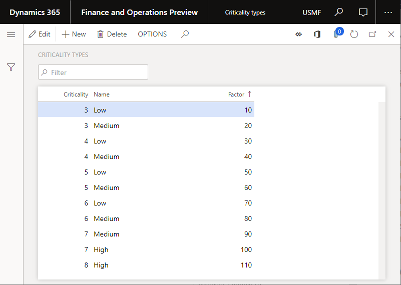

Typen kritischer Werte für Anlagen
Important
Dynamics 365 for Finance and Operations hat sich zu speziell entwickelten Anwendungen entwickelt, mit denen Sie bestimmte Geschäftsfunktionen verwalten können. Weitere Informationen zu diesen Änderungen finden Sie im Dynamics 365-Lizenzierungshandbuch.
In diesem Thema wird erläutert, was Typen kritischer Werte für Anlagen in Asset Management sind. Kritische Anlagenzustände beziehen sich auf Anlagen und werden an Arbeitsaufträge übertragen. Sie können in einem Arbeitsauftrag nicht geändert werden. Kritische Anlagenzustände werden verwendet, um den kritischen Zustand von Arbeitsaufträgen während der Planung zu berechnen. Sie werden also dazu verwendet, um das Ausmaß zu berechnen, in dem ein Wartungseinzelvorgang für eine Anlage sich auf die Produktionsplan und die Produktivität in Ihrem Unternehmen auswirkt. Weitere Informationen zu den Einstellungen, die sich auf die Berechnung von Bewertungsnoten für Arbeitsauftragsplanung beziehen, finden Sie unter Anlagenverwaltungsparameter.
Um kritische Anlagenzustände einzurichten, erstellen Sie zunächst die Typen der kritischen Anlagenzustände, die für die Anlageneinrichtung verwendet werden sollen. Anschließend richten Sie die kritischen Anlagenzustände ein.
Typen kritischer Anlagenzustände
Wählen Sie Anlageverwaltung > Einstellungen > Anlagen > Typen kritischer Werte aus.
Wählen Sie Neu aus, um einen Datensatz zu erstellen.
Geben Sie im Feld Risiko eine Zahl ein, die der Kritikalität angibt.
Geben Sie im Feld Name einen Namen für den Kritikalitätstyp ein.
Geben Sie im Feld Faktor einen Faktor ein. Dieser Faktor wird bei der Berechnung der Arbeitsauftragsplanung verwendet, um den Kritikalitätsdatensatz zu bestimmen, der verwendet werden soll. (Es wird immer der Datensatz mit dem höchsten Faktor verwendet). Diese Einstellung ist relevant, wenn, wie in der folgenden Abbildung dargestellt, Kritikalitätspositionen erstellt werden, die den gleichen Kritikalitätswert haben.

Kritische Anlagenzustände einrichten
Wählen Sie Anlagenverwaltung > Einstellungen > Kritische Anlagenzustände.
Wählen Sie Neu aus, um einen Datensatz zu erstellen.
Nehmen Sie abhängig von der erforderlichen Detailebene für die Anlagenkritikalität die zutreffende Auswahl in den Feldern Funktionaler Standort, Anlagentyp, Hersteller, Modell, Anlage, Einzelvorgangstypkategorie, Einzelvorgangstyp, Einzelvorgangstypvariante und Einzelvorgangsanforderung vor.
Note
Wenn eine Anlagenkritikalität ausgewählt ist, durchläuft Asset Management alle Anlagenkritikalitätsdatensätze, um nach einer möglichen Übereinstimmung zu suchen. Die spezifischste Kombination wird immer zuerst geprüft. Asset Management überprüft also zuerst das Feld Einzelvorgangsanforderung. Wenn keine Übereinstimmung gefunden wird, wird das Feld Einzelvorgangstypvariante überprüft. Wenn keine Übereinstimmung gefunden wird, wird das Feld Einzelvorgangstyp überprüft, usw. Wie Sie im Layout der Seite sehen können, bedeutet dieses Verhalten, dass Asset Management zum Auffinden der spezifischsten Kombinationen jeden Datensatz von rechts nach links auf Übereinstimmung prüft. Wenn keine Übereinstimmung gefunden wird, wird der Standarddatensatz verwendet, der keine Auswahl hat.
Wählen Sie im Feld Risiko einen der Kritikalitätswerte aus, die Sie im vorherigen Verfahren erstellt haben.
Hinweise zur Kritikalitätseinstellung
- Wenn Sie eine Anlagenkritikalität in dieser Einstellung ändern, nachdem Sie diese bereits für einen Arbeitsauftrag verwendet haben, wird die Kritikalität für den Arbeitsauftrag nicht entsprechend aktualisiert.
- Die Kritikalität eines Arbeitsauftrags wird jedes Mal neu berechnet, wenn eine Arbeitsauftragsposition zum Arbeitsauftrag hinzugefügt oder daraus gelöscht wird.
- Wenn ein Arbeitsauftrag mehrere Arbeitsauftragseinzelvorgänge enthält, wird die höchste Kritikalität, gemäß dem Feld Faktor auf der Seite Typen kritischer Werte, immer für den Arbeitsauftrag verwendet.
- Im Allgemeinen kann sich die Anlagenkritikalität mit der Zeit ändern. Kritikalität kann durch den Einkauf von neuer Ausrüstung, Wiederaufbereitungen usw. beeinflusst werden. Sie sollten die kritischen Anlagenzustände regelmäßig erneut bewerten (beispielsweise einmal pro Jahr), um sicherzustellen, dass die Kritikalitätsdefinitionen mit den Einstellungen der aktuellen Produktion übereinstimmen.